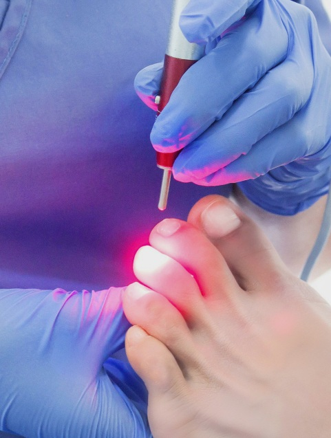
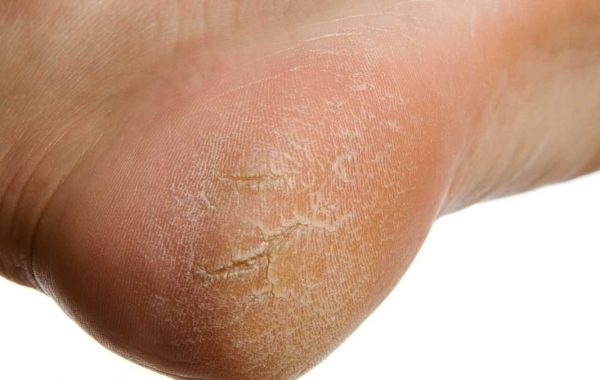

Uña encarnada
Ocurre cuando el borde de la uña crece hacia la piel, causando dolor e inflamación. El tratamiento evita infecciones y alivia la molestia.

Onicomicosis
Es una infección por hongos en las uñas, que provoca cambios de color y fragilidad. Contamos con tratamientos efectivos para recuperar la salud de tus uñas.

Papilomas plantares
Lesiones causadas por el virus del papiloma humano (VPH) en la planta del pie. Son dolorosas al caminar y requieren atención podológica especializada.

Hiperqueratosis
Se trata de durezas o callosidades que aparecen por presión o fricción. Un tratamiento adecuado previene el dolor y evita complicaciones mayores.